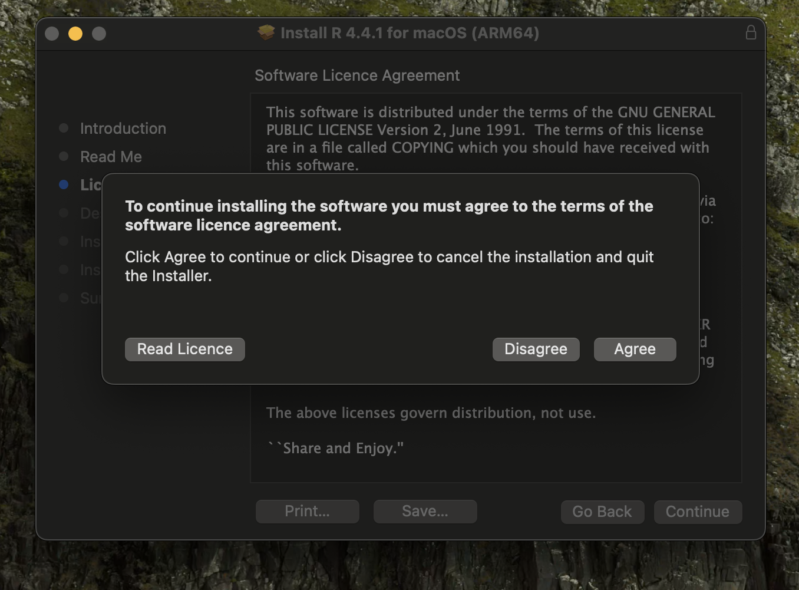

2 Installing R/RStudio for Mac
Installing R and RStudio is usually straightforward if you follow these steps. The sections below explain how to install R and R Studio on a Mac. If you prefer to watch a video showing the steps, there is a helpful YouTube video here which covers installing on a Mac.
2.1 RStudio desktop download page
Go to the RStudio desktop download page here which you can see in Figure 2.1. This is hosted by Posit - the company who create and maintain RStudio as an Integrated Development Environment (IDE).
They point you to two places to 1) install R and 2) install RStudio.
2.2 Step 1 - Install base R
The first step is installing base R. This is the software which contains all the functions and code you will use, but it is not very user friendly on it’s own. We must first install R before we install RStudio.
If you click
You should click
If you have an older Mac which does not support the latest version of R, you can scroll down the page to see different versions supporting older OSs, but please check with your course lead if you can only download an older version of R to check it is still suitable.
Once you have downloaded the file, clicking on it should open the installation process. Click
The next page (Figure 2.5) - Read Me - explains what R is installing on your computer. Click
The License (Figure 2.6) page explains the license R is covered under. Click
After clicking

Installation location and path
On a Mac, it should automatically choose a location to install R and skip Destination Select, but if you do get the option it can often cause problems to install R on a network or cloud drive, such as OneDrive or DropBox. It is better to install these programs on your computer’s drive. Depending on your computer’s settings, you may have to get IT support to give you access to installing programs if you are using a work computer with restrictions.
The Installation Type (Figure 2.8) page explains how much memory the R install takes up on your computer. Click
Depending on your computer, it will take a few seconds to a few minutes, and show as installation successful (Figure 2.9). Click
After you click
If you followed all of these steps, then you should have R successfully installed on your computer. You do not need to open it as we never actually use R on it’s own, but you need it installed before we download and install RStudio.
2.3 Step 2 - Install RStudio
If you closed the page down, go back to the RStudio desktop download page here which you can see in Figure 2.1.
This page should recognise what your OS is and the blue button will be customised to your OS. So, for a Mac user, it should prompt you to download RStudio for a MAC OS. Clicking this link will start downloading the file to your downloads folder.
If you have an older Mac and you cannot download the latest version of RStudio, click on the
Once the download has finished (depending on your computer and WiFi a few minutes to around 15 minutes), it will open in a folder (Figure 2.11). If you drag the white and blue RStudio logo into your Applications, you will be able to access it from your Applications folder.
When you open it for the first time, we recommend pinning it to your Dock (
If you have successfully installed R and RStudio, you should see a fresh RStudio window (Figure 2.12) when you open it from Applications or your Dock.
You are now ready to start working with R/RStudio from your course materials!
2.4 Getting help for installation problems
If you have any problems with installing R and R Studio on your computer, please attend the graduate teaching assistant support sessions for your course, speak to your course lead, or post on the Teams channel for your course/programme.